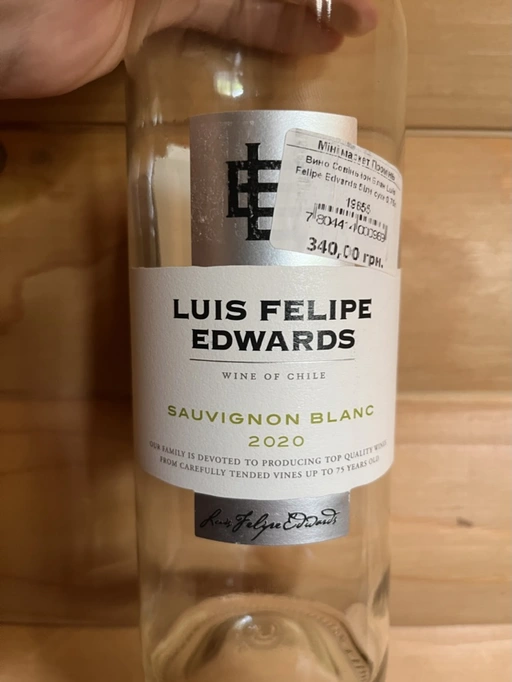

- Type
- White Still, Dry
- Producer
- Luis Felipe Edwards
- Vintage
- 2020
- Location
- Chile, Central Valley
- Grapes
- Sauvignon Blanc
- Alcohol
- 12
- Sugar
- NA
- Price
- 340 UAH
- Cellar
- N/A
Ratings
2022-05-21 - 6.50
Less interesting than reserva. White currant, kiwi with gooseberry. High acidity, fresh, but lacks focus. Feels watery. Good table wine for hot days.